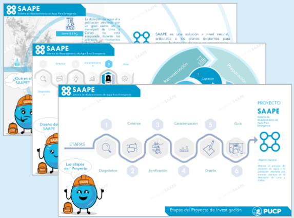

Infografía del Proyecto SAAPE
|
|
| 1. ¿Qué es el SAAPE? |
[Ver] |
| 2. Etapas del proyecto de investigación SAAPE |
[Ver] |
| 3. Consideraciones del diseño del SAAPE |
[Ver] |
| 4. Punto de abastecimiento en espacios públicos |
[Ver] |
| 5. Caracterización de la unidad espacial SAAPE |
[Ver] |
| 6. Criterios de diseño SAAPE |
[Ver] |